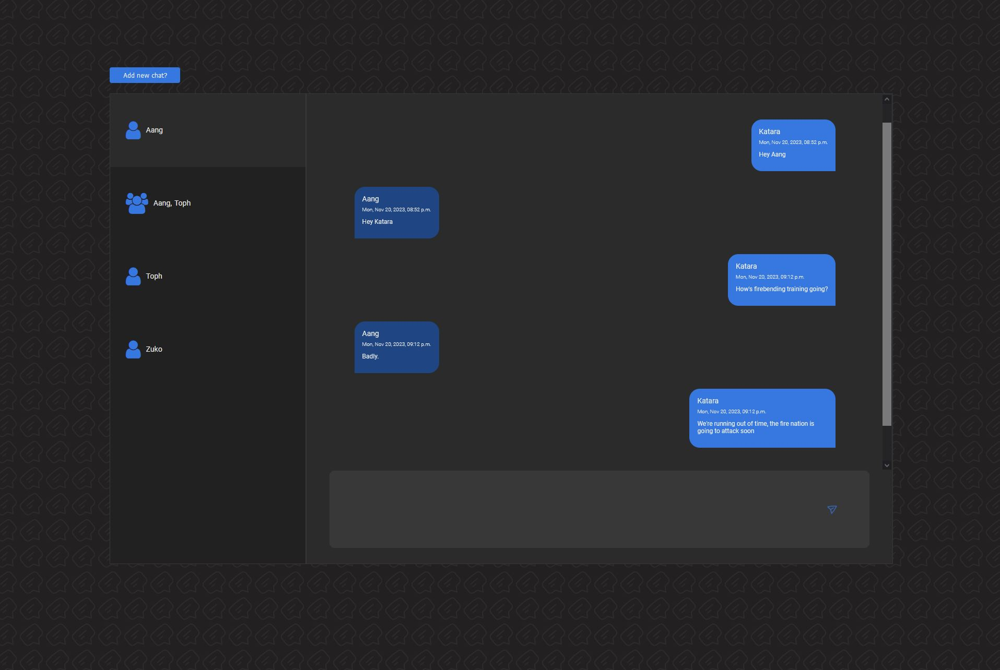
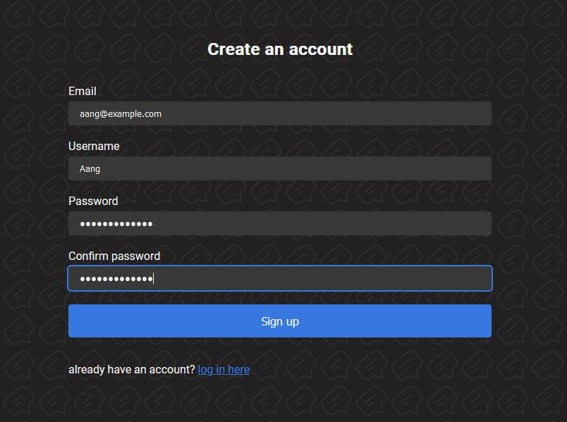

AWS AppSync Chat App

All backend and API functionality are handled by AWS services — Amplify and Cognito for authentication, DynamoDB for the database, Lambda for more complicated functionality, and AppSync with JavaScript resolvers and a GraphQL API to handle real-time messaging.
Purpose of project
I created a similar app at work, as a feature of our large SaaS app. I considered showcasing that app in my portfolio, but there were a few new AWS AppSync features I wanted to try out, and I also wanted to choose my own color palette for the front-end.
By creating my own app, I was able to share it publicly and show my cloud and microservices experience, which had been limited to private work repositories.
Design

For my own app I created a dark-mode color palette, inspired by Discord. Dark mode makes sense for a chat app where users may spend a lot of time, and it was a good opportunity to think carefully about contrast and saturation — pure black and white are actually harder to read than slightly softened alternatives, so I used dark grays and an off-white for text, with a muted blue for accents.
Development
Why I chose to use AWS AppSync
To create a chat app you need to ensure messages appear on the screen in real time. There needs to be a bi-directional relationship between the front-end and database, and the front-end must display messages immediately upon their creation without refreshing the page. One option for this could have been to use Apollo Client WebSocket Link.
I attempted this with my original work project. The front-end set-up was simple, but I quickly realized that setting up a web-socket on a serverless app built with AWS Lambda would be challenging. This required manual set-up of the web-socket, creating a new connection each time a user logged in, and storing the connection information in the database. It was much simpler to use AppSync, which removed all of this manual work.
The nitty-gritty of my AppSync experience
AppSync allows you to create a GraphQL API that connects to your backend datasources. Resolvers are the functions in your API that handle incoming requests. For my projects, resolvers generally will receive a request, get something from or put something into a DynamoDB database, and return some data to the front-end. A few times I used Lambda functions, connected to DynamoDB, as my datasource, which I will elaborate on later.
AppSync initially used VTL (Velocity Template Language), which is a Java-based language, to write mapping template code (basically equivalent to resolvers). When I began the original project, AWS just began to roll out JavaScript-based resolvers in a limited capacity. Since it was such a new functionality, and all the AppSync tutorials by my favorite devs on social media were using VTL, I decided to use VTL as well. It was time consuming for me to learn, and debugging in AppSync was often difficult, but eventually I figured it out and delivered a working app to my team.
When it came time for me to create my own project, JavaScript could be used with any type of resolver. I assumed this would make my life easier and coding this project would be faster. This was not the case. JavaScript is not run on a browser or Node.js runtime, but on a special APPSYNC_JS runtime, and there are limits on what JavaScript features may be used. For example, try/catch statements are not supported, making error handling challenging; you need to use their built-in functions. async/await and promises are also not supported. While I understand the logic behind this - awaiting promises is too time-consuming and your AppSync API is supposed to be fast - this presented challenges for my multi-step code.
Pipeline resolvers are made for this scenario. This could have worked, except there were some cases when I needed to query multiple items from the database using a global secondary index (GSI). There is a built-in AppSync function called BatchGet which I tried to use, however it will only allow you to get items using the primary key, no secondary indexes, so it didn’t work for me.
At this point I could have re-worked my data structures, but instead I put my JavaScript code into Lambda functions and used them as the datasource. I was able to use the JavaScript functionality I was familiar with and write the exact DynamoDB queries I needed. For my purposes this worked fine, and I never noticed any performance issues.
Take-aways and future updates
Overall I enjoyed learning AppSync. Not having to manually set up web sockets is a significant time-saver, and working with GraphQL reinforced habits I like — thinking in terms of inputs and outputs, and reaching for types. It made me want to revisit the project in TypeScript; I ran into issues importing my own types into the AppSync environment and ended up leaving it out. AppSync seems to want to auto-generate schemas and types for you, which I resisted, but it's something I'd explore more if I returned to this project.
The most frustrating aspect was debugging. Resolver errors often just said "there is a problem with the code" with nothing more to go on, which made troubleshooting slow. It's the main thing I'd want to see improved if I used AppSync again.